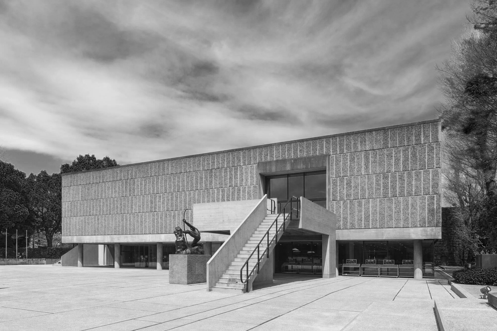
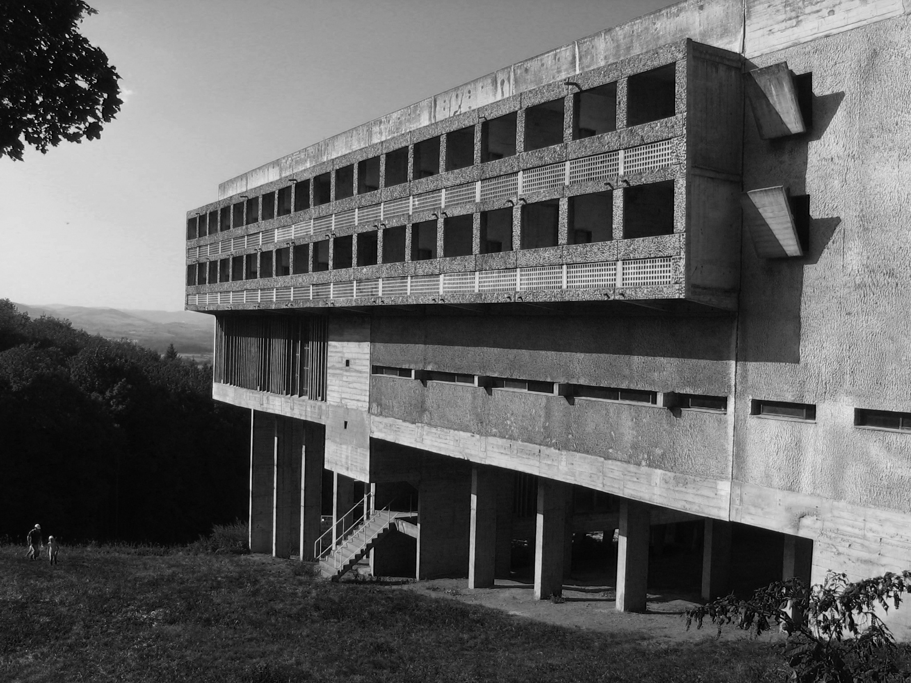
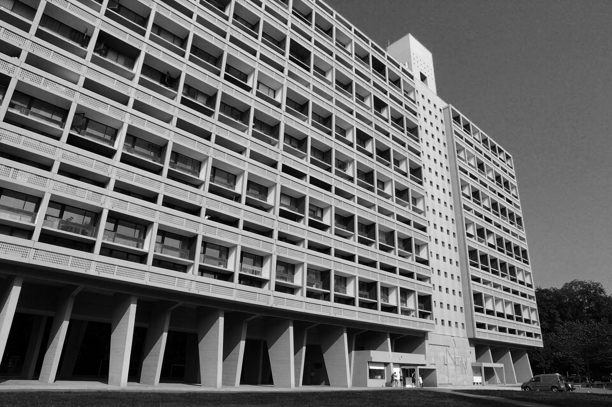
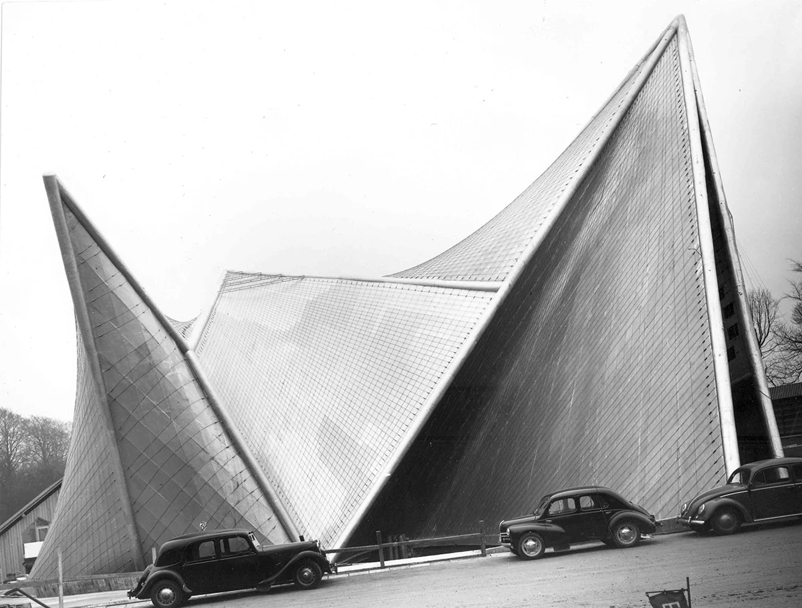
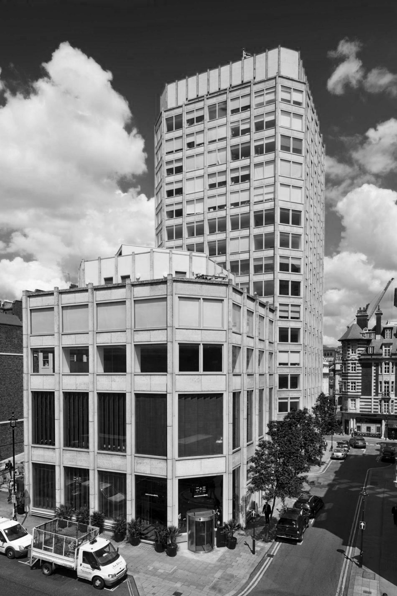
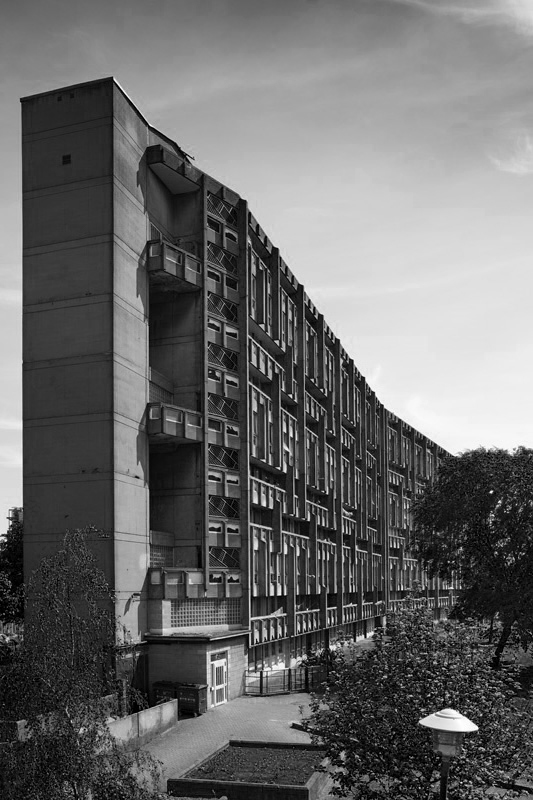
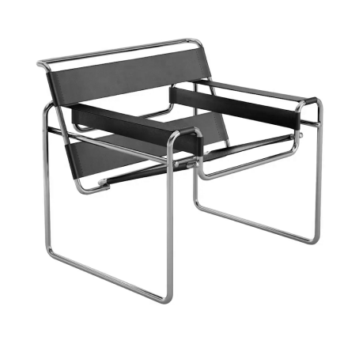
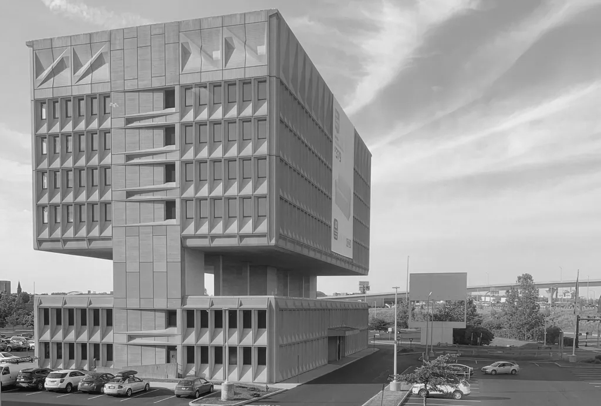
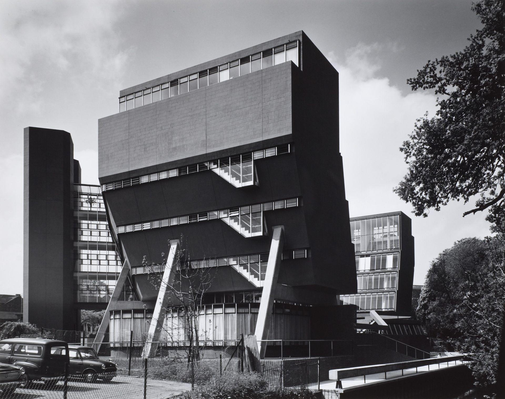

INTRODUCTION
Le brutalisme est un style architectural issu du mouvement moderne, qui connaît une grande popularité des années 1950 aux années 1970 avant de décliner peu à peu, bien que divers architectes s'inspirent encore des principes de ce courant. Il se distingue notamment par la répétition de certains éléments comme les fenêtres, et par l'absence d'ornements et le caractère brut du béton.
Le Corbusier
Le Corbusier, de son vrai nom Charles-Édouard Jeanneret-Gris, était un architecte, urbaniste et
designer suisse naturalisé français, né en 1887 et mort en 1965. Il est considéré comme l'une des
figures les plus influentes de l'architecture moderne. Ses travaux, caractérisés par des lignes
pures, des volumes simples et l'utilisation du béton armé, ont révolutionné le paysage architectural
du XXe siècle.
Le Corbusier a développé une théorie architecturale novatrice, exposée dans son ouvrage "Vers une
architecture" en 1923.

Couvent Sainte-Marie de La Tourette

Cité Radieuse à Briey

Pavillon Philips à Bruxelles

A & P Smithson
Alison et Peter Smithson étaient un duo d'architectes britanniques, souvent associés au mouvement
brutaliste. Ils ont collaboré étroitement tout au long de leur carrière, produisant une œuvre
architecturale singulière et influente.
Ensemble, ils ont ouvert leur agence d'architecture en 1950. Leur approche était caractérisée par
une grande rigueur formelle, un respect des matériaux et une volonté de créer des bâtiments en
harmonie avec leur environnement extérieur.

Robin Hood Gardens à Londres

Marcel Breuer
Marcel Breuer était un architecte et designer de mobilier hongrois naturalisé américain, né en 1902
et mort en 1981. Il est considéré comme l'une des figures clés du mouvement moderne.
Après avoir étudié au Bauhaus, une école d'art et d'architecture allemande, Breuer a développé un
style unique caractérisé par des lignes épurées, des formes simples et l'utilisation de matériaux
industriels comme le tube d'acier. Il est particulièrement connu pour ses créations de mobilier,
notamment la chaise Wassily, qui est devenue une icône du design moderne.

Pirelli Tire Building à New Haven

James Stirling
James Stirling était un architecte britannique né à Glasgow en 1926 et décédé à Londres en 1992.
Considéré comme l'un des architectes les plus importants et influents de la seconde moitié du XXe
siècle, il a laissé une empreinte indélébile sur l'architecture moderne.
Après avoir étudié à l'Université de Liverpool, Stirling a fondé son agence avec James Gowan en
1956. Leur approche était caractérisée par une grande rigueur formelle, un mélange de références
historiques et une utilisation audacieuse des matériaux.

Université de Leicester